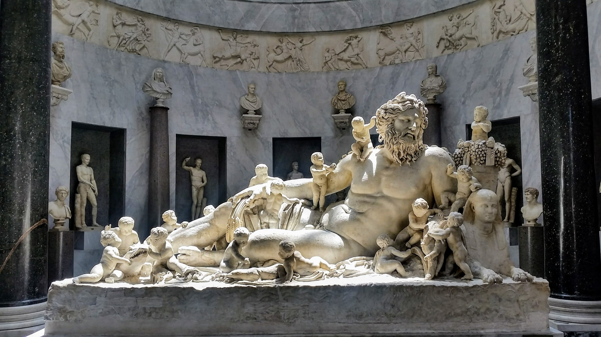

목차
- 운
- 성공에 대한 열망
- 새로운 독창성 추구
- 장시간의 노력
- 집중
- 실패
- 끈기
- 설득력
- 겸손한 태도
- 공로 나누기
- 지속적인 학습 능력
- 진실성
- 위기 대응
"빌 게이츠 : ... IBM은 소프트웨어의 가치를 알아보지 못했습니다. 가장 중요한 건 하드웨어라 생각했고 소프트웨어는 그저 일종의 필수품 정도로만 가볍게 여긴 것이죠. 우리와 같은 비전을 깨달았더라면, 그러니까 소프트웨어가 앞으로 하드웨어보다 훨씬 중요해질 거라는 사실을 알았더라면 아마 전혀 다른 방식으로 계약을 체결하려 했을 겁니다."_p56
"오프라 윈프리 : ... 그런데 제가 25년간 인터뷰를 진행하면서 배운 게 있습니다. 당신이 나를 인터뷰하든, 제가 당신을 인터뷰하든, 직업이 무엇이든 간에, 인생이나 관계의 어느 단계에 있든지 간에, 우리가 만나는 모든 사람은 어떤 일이 끝나고 나면 '괜찮았는지' 알고 싶어 한다는 겁니다. 바꿔 말하면 결국 "내가 한 말 들었어요? 그리고 내 말이 당신에게 의미가 있었나요?"가 됩니다. 저는 이걸 염두에 두고 타인의 말을 듣기 시작했습니다. 지금 이 순간 당신이 나와 이곳에서 대화하고 있고, 당신이 시간을 내서 나와 인터뷰하는 것이 중요한 이유는, 당신이 중요한 존재이기 때문입니다. 제 토크쇼는 당신이 중요한 존재라는 사실을 확인시켜주는 자리였습니다. 출연자든 시청자든 방청객이든 모두 말입니다."_p95
"워런 버핏 : 일이 필요 없더라도 하고 싶은 일을 찾으십시오. 인생은 한 번뿐이니까요. ... 제가 벤저민 그레이엄 밑에서 일하겠다고 했을 때 이렇게 말했습니다. "무급으로 일하겠습니다." 흥미를 북돋우는 일을 찾으세요. 좋아하는 일을 찾으시길 바랍니다."_p123
"지니 로메티 : 제가 어머니에게서 배운 가장 중요한 교훈은 '다른 사람의 시선 따위는 신경 쓸 필요가 없다'였습니다."_p223
"누군가가 '당신이 했던 한 가지만 꼽아보라'고 한다면 저는'끊임없는 배움'을 들 것입니다. '모르는 것은 항상 있게 마련이니 누구에게든 배워야 한다'고 스스로를 다독이는 것이 성공 비결이라면 비결입니다."_p231
"인드라 누이 : 거의 매일 어머니는 저희를 앉혀 놓고 이런 말씀을 하셨습니다. "네가 대통령이라고 상상하고 나에게 연설을 해봐라." 어느 날은 총리가 되기도 했고, 어느 날은 주지사가 되기도 했습니다."_p235
"데이비드 퍼트레이어스 : 리더십, 특히 전략적 차원에서 최상위 리더십은 네 가지 핵심 과제를 포함합니다. ... 리더는 목표를 명확히 파악해야 합니다. 이러한 목표를 조직 전체에 폭넓게 효과적으로 전달해야 합니다. 그리고 그러한 목표를 어떻게 다듬을지 결정해야 합니다. 그리고 그 모든 과정을 반복하는 겁니다."_p297
"제임스 A. 베이커 3세 : 아버지가 늘 하시던 말씀이 있습니다. "사전에 준비하면 나쁜 결과를 방지할 수 있다. Prior Preparation Prevent Poor Performance." 이 문장 각 단어의 앞 글자를 따서 '5P 원칙'이라고 부르셨죠."_p315
"앤서니 파우치 : 제가 아주 절실히 느끼는 부분입니다만, 목표나 임무를 수행해야 하는 어떤 조직을 이끄는 입장이라면 자신을 따르는 사람들에게 정확히 내 비전이 뭔지, 그리고 조직이 나아가야 할 방향이 어디인지를 명확히 설명하는 것이 중요합니다."_p374
"데이비드 M. 루벤스테인 : 민주주의에 최대 위협이 되는 것은 무엇이라고 보십니까?
루스 베이더 긴즈버그 : 우리가 가진 권리를 지키는 데 별 관심이 없는 '대중'입니다. 저명한 러니드 핸드 판사는 자유에 관한 위대한 연설을 남긴 적이 있습니다. "사람들의 가슴에서 불꽃이 사그라들면 어떤 헌법도, 어떤 판사도 이를 되살릴 수 없다." 제 신념은 자유의 정신에 뿌리내리고 있습니다."_p407
"마이크 '코치 K' 슈셉스키 : 뭐니 뭐니 해도 기량이 향상되려면 '여기까지가 내 한계야'라는 생각을 바꿔야 합니다. 한계에 자꾸 노출되면 스스로 변변찮아 보이고 결국 실패하고 맙니다. 한계점을 더 멀리, 더 담대한 곳으로 이동시켜야 합니다. 그러면 실패하더라도 그 실패에서 뭔가를 배우고 성장하게 됩니다."_p434
"르네
플레밍 : 무슨 일이 있어도, 어떤 한계도 설정하지 말라고 조언합니다."_p441